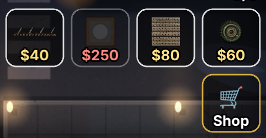

Today the tiles reuse the top-down world art, so the 2 m barricade turns into a thin strip and the mine into a dark dot. Below are three icon styles drawn in code for the four buildings we have. Each is shown at real phone size in the tile (left) and enlarged (right). The world art stays as it is in the game.

The same objects as in the world, seen from a low three-quarter angle so they have height. The palisade stands up with its posts, the turret shows its barrel, nails stick up from the board, and the mine shows its red light. Closest to the game's look.
Flat light silhouettes with one accent colour each, like road signs. The easiest to read at a glance and at small sizes; less like the game's painted look.
The top-down world art, zoomed in and cropped so it fills the tile: you see the middle of the barricade, not all of it. The smallest change from today, and it matches exactly what appears on the street.
Reply with a style code (for example "I1"), or mix them per building ("I1, but the I2 mine"). Later buildings (med station, floodlight, bear trap) get an icon in the chosen style when they're built. Until then they fall back to their world art.